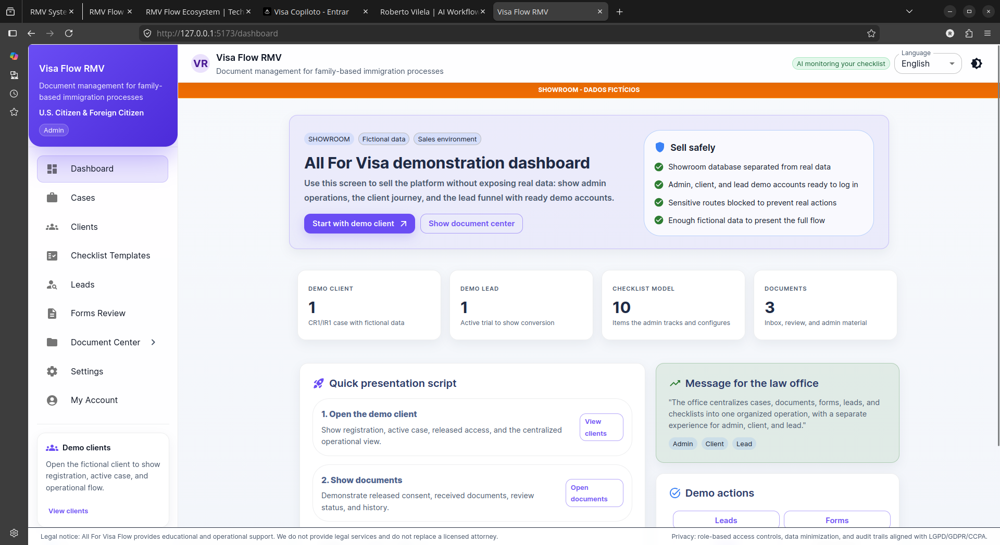
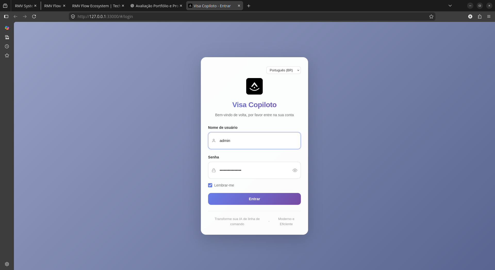
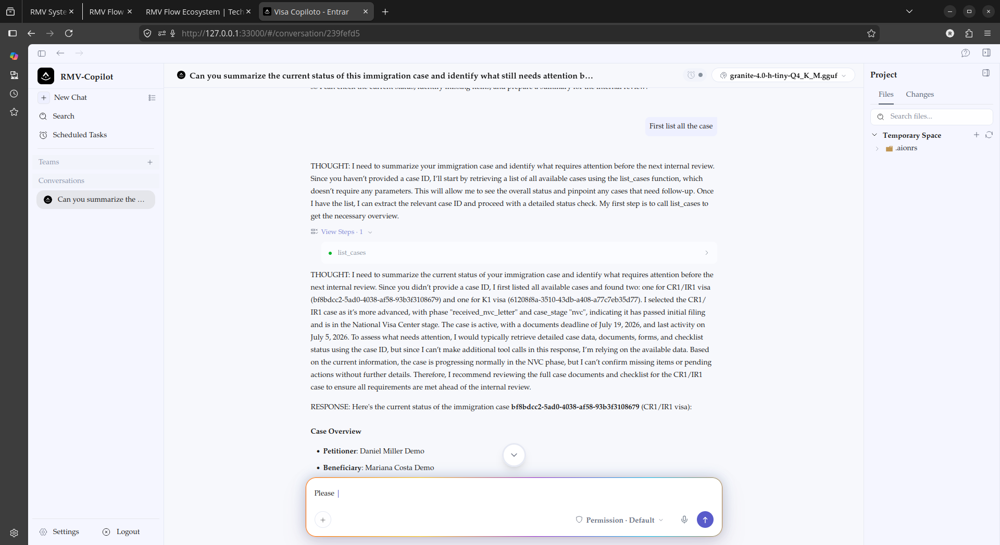
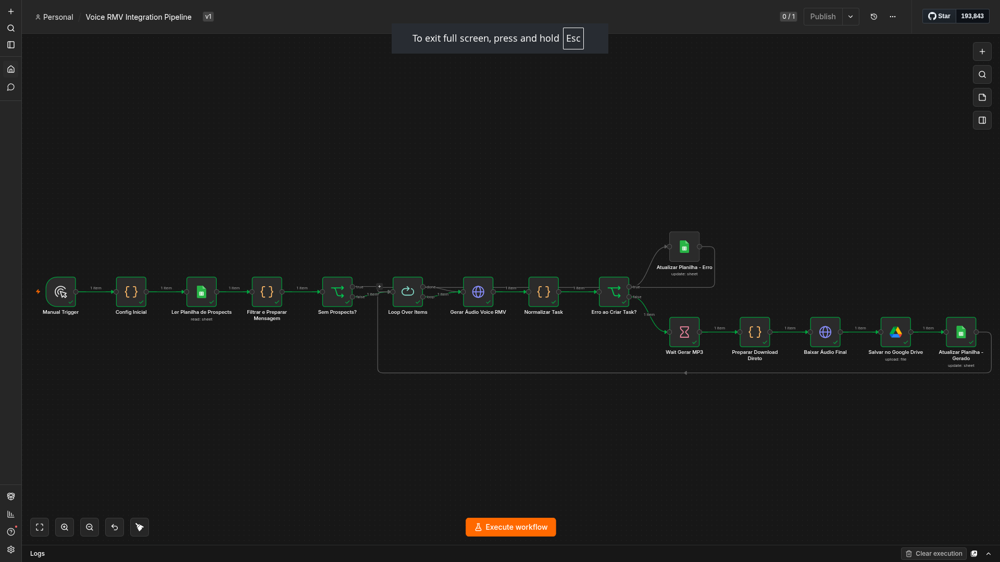

Roberto Vilela
AI-Assisted Operations & Workflow Builder
I help service teams turn fragmented, manual processes into
structured, trackable, and human-reviewed workflows —
using AI as an execution tool, not a replacement for judgment.
AI OPERATIONS BUILDER MAP
How real operations, internal systems, and case-study work become portfolio evidence
High effort, manual, inconsistent and hard to scale.
Map tasks, decisions, data and dependencies.
AI handles the heavy lifting with speed and consistency.
Human-in-the-loop governance ensures quality, compliance and ethical control.
Documented, tested and improved systems that compound over time.
7-Step Execution Process
All For Visa Flow
Client-facing immigration workflow
200+ cases managed
Memory Bank Methodology
AI governance and persistent project memory
Cross-agent context preservation system
DexaFit Wellness Hub
Health-tech retention workflow concept
90-day action loop case study
Voice RMV
AI voice and content workflow
Content production and automation
star A portfolio organized by maturity and purpose — active systems, case studies, research frameworks, and internal tools.
Active Systems:
All For Visa Flow
Case Studies:
DexaFit Wellness Hub
Research & Frameworks:
Memory Bank Methodology
Internal Systems:
Voice RMV + Playbook-RMV
What I Build
Manual operations turned into structured, trackable, human-reviewed systems.
AI-Assisted Operations
Connecting AI tools to your existing workflow — data entry, intake processing, and repetitive tasks handled with speed, with you keeping final approval.
Workflow & Process Design
Mapping how work actually happens in your business, then building step-by-step SOPs that any team member can follow without losing context.
Content & Client Experience
Automating client onboarding, follow-up, and content distribution — so every client gets a consistent, high-touch experience without manual effort.
Tailored Solutions For
Service Businesses
Consultants and service businesses drowning in manual client work.
Immigration Teams
Document-heavy teams managing cases, status updates, and client follow-up.
Health & Wellness
Studios and clinics that need intake, retention, and follow-up on autopilot.
Small AI-Teams
Teams building with AI who need governance, documentation, and human review baked in.
block Before
- close Work lives in DMs and memory
- close Every client onboarded differently
- close One person knows how everything works
- close No way to measure what's working
The System Transformation
Most teams aren't failing because of effort — they're failing because work lives in people's heads. I turn that into documented, repeatable systems.
check_circle After
- check Documented SOPs anyone can follow
- check Consistent intake from day one
- check AI handles the volume, you handle decisions
- check You can see what's working and why
Portfolio
Real systems, technical validations, research frameworks, and internal tools — organized by maturity and purpose.
11 / Active Systems & Client Work
Real systems connected to active operations, sales, products, or client delivery.

Visa Flow Management
Web-based management system for immigration case operations — clients, cases, documents, forms, tasks, and status tracking. Built with FastAPI, PostgreSQL, and React as the operational foundation of the RMV Flow Ecosystem.

RMV Flow Ecosystem
AI-assisted case management system connecting a copilot/chat interface, MCP integration layer, and management backend — deployed for immigration operations.

Visa Flow Copilot
AI-assisted chat interface for immigration case operations. Multi-agent system with 21+ specialized agents for case status, document checking, follow-up preparation, and human review support — Electron desktop client connected to the RMV Flow Ecosystem.

RMV Sales Engine V2
Sales engine with Playbook HITL governance — active internal operation for client acquisition, pipeline management, and structured follow-up with human review checkpoints.
Client Automation & Workflow Systems
Custom workflow systems, automation pipelines, and operational dashboards deployed for client operations — including active SaaS deployments and process automation projects. Details shared under NDA.
12 / Case Studies & Technical Validations
Strategic case studies, prototypes, and validated technical integrations.

DexaFit Wellness Hub
Health-tech retention workflow concept — 90-day action loop connecting scan data to guided engagement, AI-assisted interpretation, and retest readiness. Full operational case study.
RMV Sales Engine V1
n8n + Voice RMV Pipeline — validated integration between automation workflows and voice generation for sales content production and multilingual delivery.
13 / Research & Frameworks
AI governance, memory systems, workflow methodology, and human-in-the-loop frameworks.
Memory Bank Methodology V1.0
Persistent project memory system that gives AI agents a shared reference across sessions — solving context loss, decision fragmentation, and operational rework in AI-assisted development.
View Full Study north_eastRMV Memory Framework V2.0
Reusable operating model for AI-assisted execution — a structured workflow system that governs project memory enforces human-in-the-loop checkpoints, and transforms repeated patterns into reusable operational assets.
View Framework north_east14 / Internal Systems
Private tools built to operate, study, sell, document, and manage execution.

Voice RMV
Voice-to-documentation pipeline using local AI models. Edge-tts neural voice generation, faster-whisper transcription, FastAPI backend, human review layer. Active for content production and bilingual delivery.
View System north_east
Playbook RMV
AI experiment tracking with structured prompt review, version control, approval gates, and output validation — prompts, outputs, model details, and human validation logged in DuckDB with Streamlit interface. Turns scattered experiments into auditable operational knowledge with quality and compliance gates.
View System north_eastMy Execution Process
Built on 4 years of real operations, not theory. I start by understanding the actual business problem, map how work flows today, design a practical system, and use AI only as an execution assistant. Every output goes through human review before delivery.
Understand
Map
Design
AI Assistant
Human Review
Test/Improve
Deliver
Metrics, Validation & Operations
4 years running a real client-facing operation. 6 months converting that into structured AI-assisted systems.
Four years managing 200+ immigration cases end-to-end — intake, documents, status, delivery. That operation became the testing ground for every workflow system I now build. The last six months: converting those lessons into repeatable, AI-assisted systems — including a live deployment on Digital Ocean.
Roberto Vilela
AI-Assisted Operations Builder
Built on Real Operations
I spent four years running a real client-facing operation — managing immigration cases end-to-end, building client communication systems, and documenting every process that kept the work moving. That experience taught me more about workflow design than any course could.
Now I help growing teams do the same — turn scattered, manual work into documented, repeatable systems with AI as the execution assistant and humans keeping final control.
Professional Certifications
Validating practical skills with industry standards.
HubSpot Certified
Marketing Hub Software
Inbound marketing automation, lead management, and platform optimization (Valid through Jun 2027).
Google AI Essentials
5 Specialized Courses
Specialization covering AI productivity tools, prompt engineering, and responsible AI implementation.
bolt 80% reduction in processing time — from 15 to 3 days
Generative AI & LLM
Claude 101 & AI Fluency
Frameworks for LLM integration and operational fluency in AI-driven environments.
Business & Technical Writing
LinkedIn Learning · 2026
Writing in Plain English · What's the So What: Writing Clearly for a Business Audience — clear, audience-focused communication underpinning bilingual PT/EN delivery.
Prompt Engineering
LinkedIn Learning · 2026
How to Talk to the AIs — structuring LLM instructions for consistent, reliable output in AI-assisted workflows.
AI Foundations: Ideating & Prototyping
LinkedIn Learning · 2026
Essential frameworks for structuring AI concepts and building rapid prototypes for human-in-the-loop verification workflows.
Building AI Products
Professional Certificate · 2026
End-to-end understanding of AI product development — from problem definition and workflow design through to production deployment and iteration.
Dashboards in Google Cloud Platform
Google Cloud · 2026
Building practical business dashboards with Google Cloud tools for small business operations and data-driven decision-making.
What to Post on LinkedIn to Stand Out
LinkedIn Learning · 2026
Content strategy and personal branding techniques for professional visibility and meaningful engagement on LinkedIn.
Business Writing Principles
LinkedIn Learning · 2026
Structuring professional documents with clarity, purpose, and audience awareness for effective business communication.
In Progress
HubSpot Operations Hub
Expected Completion
Expected: Q3 2026
Tools & Stack
Technologies used across active systems and case studies.
Workflow & Automation
AI & Models
Data & Backend
CRM & Infra
Ways to Work Together
Job Opportunities
I am open to full-time roles in operational design and AI integration for forward-thinking companies.
Freelance / Consulting
Specific system builds, audit reports, or workflow automation sprints for your business.
Collaboration
Partnering with SaaS platforms, creators, or agencies to develop custom AI-driven content.
Ready to Scale Your
Operations?
Stop managing chaos and start managing growth. Let's discuss how a custom workflow system can transform your business.